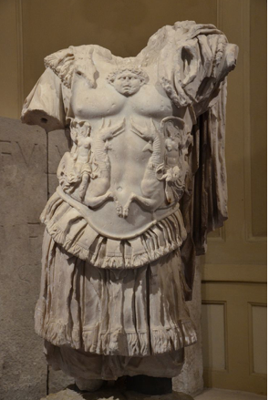

Charles D. Tarlton
Northampton, Massachusetts, USA
In the Midden

Disciple: They are in search of the things below the earth.
Strepsiades: Then they are searching for roots. Don't worry about it,
fellows. I know where you can get some big, nice ones. And what
are these fellows doing, the ones who are bent over like that?
Disciple: They are diving into deep secrets.
–Aristophanes, Clouds
make this the best line
you could ever have written!
Hired workers carefully plowed the top layer of soil, scratching down about two inches. Archeology students came along behind, shoveling the loosened dirt, clods, rocks, and gravel with masonry trowels onto large, flat screen sieves and then poured buckets of water carefully over them. The soil and stiff clay washed away, leaving the small stones, bones, shells, and pieces of broken tile.
sounding Greek to me
deadly still alive, alive
still deadly under the ground
corner of plaster
fragment, painted brown and blue
an Arab gypsum
from a seafront palazzo
making way for condos
This went on for weeks—the plowing, shoveling, troweling, raking, and sieving—until after lunch one day we all heard the sudden sharp click as a student's trowel digging in the loose dirt hit something hard. All work stopped.
stoical scratching
underground has awakened
Now everyone gathered around the professor, who was down on his knees carefully scraping dirt loose and brushing it away. Slowly an impermeable surface like rock or cement was emerging. It was rounded and smooth, rough and ragged in ways Nature never could have caused.
an old spirit stuck
in the carvèd stone, crawling
out now into the sun
We thought at first maybe it was a shard of pottery, and from its size we guessed it might be the broken and discarded handle from a large amphora. As the dirt and clay fell away, however, something more momentous gradually appeared.
when you are whistling
Tchaikovsky’s Fifth Symphony
like some little ditty
What lay under the dirt for millennia was now exposed as the weird pocked surface of a stone cicatrix where we guessed, as it more and more emerged, a neck and a head had been.
you lose sight of the whole score
its intricate harmonies
The professor continued to dig and brush, but no greater complexity was revealed. It turned out both arms as well as the head and neck were missing, snapped off at the shoulders, and further down both legs, too, were gone. A torso stood before us, alone in its cuirass armor.
Author's Note: The headless torso in the photograph is part of a statue of the Emperor Trajan, Temple of Trajan, Upper Acropolis, Pergamon. |